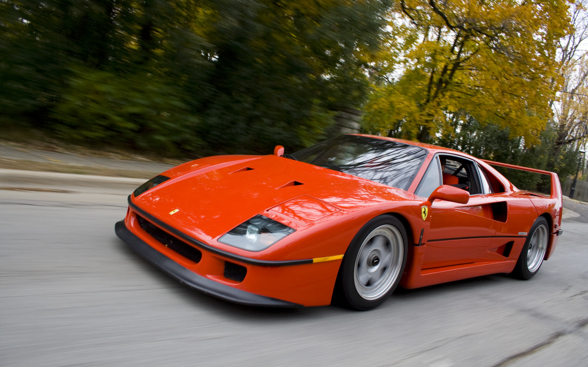

Ferrari sport
Осенью 1992 года в Париже вышло в свет высокомощное заднеприводное спортивное купе классической компоновки 456 GT/GTA. Дизайн — Pininfarina. GTA — март 1996 (Женева). ASR, модернизированные кузов, подвеска и салон (4 места) — март 1998, Женева.

Ferrari
- В мае 1994 года вышел F355, спортивный автомобиль преемник 348 GTB/GTS. Самая дешёвая и популярная модель фирмы. Дизайн — Pininfarina. Весной 1995 года появился Spider — кабриолет. Berlinetta — купе, GTS — купе со съемной жесткой крышей, F1 -управление трансмиссией по типу гоночного автомобиля. Прекращение производства Berlinetta/Targa — лето 1997.
Ferrari